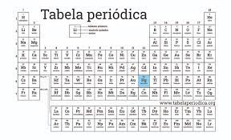

Importância da Química no Desenvolvimento de Sistemas:
Através dos químicos foi possível mobilizar o meio científico e a sociedade,
em uma ampla rede de fabricação de produtos, pesquisa, desenvolvimento de
novos equipamentos e informação correta, precisa e confiável.
O equipamenos tecnológicos sao formados por alguns elementos quimicos, são eles:
.Al-Alumínio
O alumínio está presente em condutores elétricos, tubo de raios catódicos de
monitores de computadores, placas de circuito impresso, além de outros equipamentos.
.As-Arsênio
O arsênio é encontrado nos circuitos integrados de celulares e computadores.
.Se-Selênio
O selênio está presente nas placas de circuito impresso.
.Hg-Mercúrio
O mercúrio é utilizado para a fabricação de televisores, computadores, monitores
e lâmpadas fluorescentes.
.Be-Berílio
É encontrado em computadores e celulares.
.Cd-Cádmio
O cádmio é usado em computadores, televisores e bateria de laptops.
.Pb-Chumbo
O chumbo pode ser encontrado em computadores, celulares e televisores.
Como o mercado de trabalho na área da química se encontra no momento?
Os profissionais que optam pela carreira acadêmica encontram oportunidades
de trabalho em todo o território nacional. Existe uma carência de professores
de todas as áreas para a educação básica incluindo a química.
Modelo atômicco de Dalton
O Modelo Atômico de Dalton, conhecido como o modelo bola de bilhar, possui os seguintes princípios: Todas as substâncias são formadas de pequenas partículas chamadas átomos; Os átomos de diferentes elementos têm diferentes propriedades, mas todos os átomos do mesmo elemento são exatamente iguais; Os átomos não se alteram quando formam componentes químicos; Os átomos são permanentes e indivisíveis, não podendo ser criados nem destruídos; As reações químicas correspondem a uma reorganização de átomos.
Modelo Atômico de Thomson
O Modelo Atômico de Thomson foi o primeiro a realizar a divisibilidade do átomo. Ao pesquisar sobre raios catódicos, o físico inglês propôs esse modelo que ficou conhecido como o modelo pudim de ameixa. Ele demonstrou que esses raios podiam ser interpretados como sendo um feixe de partículas carregadas de energia elétrica negativa. Em 1887, Thomson sugeriu que os elétrons eram um constituinte universal da matéria. Ele apresentou as primeiras ideias relativas à estrutura interna dos átomos. Thomson indicava que os átomos deviam ser constituídos de cargas elétricas positivas e negativas distribuídas uniformemente. Ele descobriu essa mínima partícula e assim estabeleceu a teoria da natureza elétrica da matéria. Concluiu que os elétrons eram constituintes de todos os tipos de matéria, pois observou que a relação carga/massa do elétron era a mesma para qualquer gás empregado em suas experiências. Em 1897, Thomson tornou-se reconhecido como o “pai do elétron”.
Modelo Atômico de Rutherford
Em 1911, o físico neozelandês Rutherford colocou uma folha de ouro bastante fina dentro de uma câmara metálica. Seu objetivo era analisar a trajetória de partículas alfa a partir do obstáculo criado pela folha de ouro. Nesse ensaio de Rutherford, observou que algumas partículas ficavam totalmente bloqueadas e outras partículas, que não eram afetadas, ultrapassavam a folha sofrendo desvios. Segundo ele, esse comportamento podia ser explicados graças às forças de repulsão elétrica entre essas partículas. Pelas observações, afirmou que o átomo era nucleado e sua parte positiva se concentrava num volume extremamente pequeno, que seria o próprio núcleo. O Modelo Atômico de Rutherford, conhecido como modelo planetário, corresponde a um sistema planetário em miniatura, no qual os elétrons se movem em órbitas circulares, ao redor do núcleo.
Modelo de Rutherford – Bohr
O modelo apresentado por Rutherford foi aperfeiçoado por Bohr. Por esse motivo, o aspecto da estrutura atômica de Bohr também é chamada de Modelo Atômico de Bohr ou Modelo Atômico de Rutherford-Bohr. A teoria do físico dinamarquês Niels Bohr estabeleceu as seguintes concepções atômicas: Os elétrons que giram ao redor do núcleo não giram ao acaso, mas descrevem órbitas determinadas. O átomo é incrivelmente pequeno, mesmo assim a maior parte do átomo é espaço vazio. O diâmetro do núcleo atômico é cerca de cem mil vezes menor que o átomo todo. Os elétrons giram tão depressa que parecem tomar todo o espaço. Quando a eletricidade passa através do átomo, o elétron pula para a órbita maior e seguinte, voltando depois à sua órbita usual. Quando os elétrons saltam de uma órbita para a outra resulta luz. Bohr conseguiu prever os comprimentos de onda a partir da constituição do átomo e do salto dos elétrons de uma órbita para a outra.